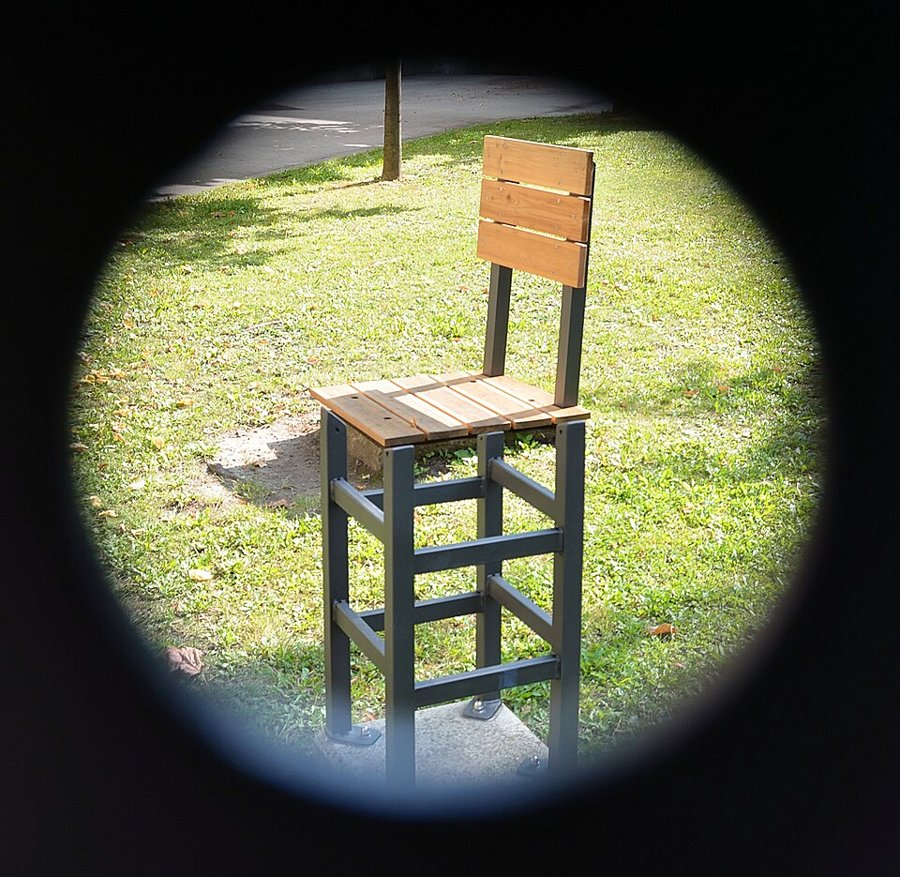
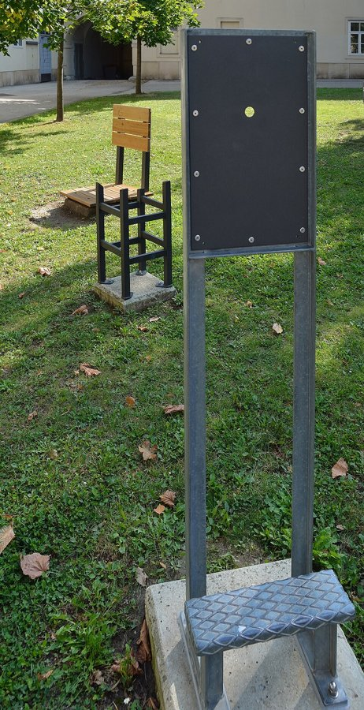

Robot Control · University of Warsaw
PDF version (light, for printing)
Passing a part = at least 50% of its points (the threshold may be adjusted down).
Some homework assignments can be replaced by an individually defined project (e.g. hardware deployment). The proposal must be approved by one of the lab teachers.
For exceptional commitment, your lab teacher can add half a grade at the end of the semester (e.g. 4+ → 5). Ask your lab teacher how the bonus is judged.
Note: $2 + 0.5 = 2.5 \lt 3$.
Further reading: First Principles of Computer Vision (S. Nayar) — Imaging → Image formation; Szeliski, Computer Vision: Algorithms and Applications, ch. 2.
$f : \mathbb{R}^2 \to \mathbb{R}^3,\ (x, y) \mapsto (r, g, b)$. Pixel coordinates: origin top-left, $x$ right, $y$ down.
Photometric: change the values, $\;g(x) = h\big(f(x)\big)$, $h:\mathbb{R}^3\to\mathbb{R}^3$ acts on colours, e.g. brightness $h(c) = 1.4\,c$
Geometric: transform the domain, $\;g(x) = f\big(T^{-1}(x)\big)$, $T:\mathbb{R}^2\to\mathbb{R}^2$ moves pixel positions, e.g. horizontal flip $T(x, y) = (W - x,\ y)$
To colour output pixel $x$ we ask: where did it come from?
$$g(x) = f\big(T^{-1}(x)\big)$$
This is backward warping; we come back to it for image stitching in lecture 3.
$T^{-1}(x)$ is rarely an integer pixel: we need interpolation (nearest neighbour here).
Why: $\;M(p + t\,d) = Mp + t\,(Md)$ — the line through $p$ with direction $d$ becomes the line through $Mp$ with direction $Md$. Parallel lines share $d$, so their images share $Md$.
$$x_2 = x_1 + t_x, \qquad y_2 = y_1 + t_y$$
None: every linear map sends $0 \mapsto 0$.
Trick: go one dimension up. $$\begin{bmatrix}x_2\\y_2\\1\end{bmatrix} = \begin{bmatrix}1&0&t_x\\0&1&t_y\\0&0&1\end{bmatrix}\begin{bmatrix}x_1\\y_1\\1\end{bmatrix}$$
One representation for everything: rotation, scaling, translation and projection all become matrix products, and a chain of them collapses into one matrix.
A 2D point $p = (x, y)$ is represented by any $$\tilde p = (\tilde x, \tilde y, \tilde z), \quad \tilde z \neq 0$$ with $x = \tilde x / \tilde z,\ y = \tilde y / \tilde z$.
$$\begin{bmatrix}x\\y\\1\end{bmatrix} \equiv \begin{bmatrix}\lambda x\\ \lambda y\\ \lambda\end{bmatrix}$$
A point = a ray through the origin.
Its intersection with the plane $\tilde z = 1$ is the ordinary point.
The $3\times3$ translation matrix is a shear of 3D space:
$$(\tilde x, \tilde y, \tilde z) \mapsto (\tilde x + t_x \tilde z,\ \tilde y + t_y \tilde z,\ \tilde z)$$
Options: rotation · scaling · translation · skew.
$TR = \begin{bmatrix}R_{2\times2} & t\\ 0 & 1\end{bmatrix}$ vs $RT = \begin{bmatrix}R_{2\times2} & R_{2\times2}\,t\\ 0 & 1\end{bmatrix}$
In general $TR \neq RT$. The matrix closest to $p$ acts first; in $RT$ the translation vector itself gets rotated.
| Transformation | $3\times3$ matrix representation | DoF | Preserves |
|---|---|---|---|
| translation | $\begin{bmatrix}I & t\\ 0^\top & 1\end{bmatrix}$ | 2 | orientation + everything below |
| rigid (Euclidean) | $\begin{bmatrix}R & t\\ 0^\top & 1\end{bmatrix}$ | 3 | lengths |
| similarity | $\begin{bmatrix}sR & t\\ 0^\top & 1\end{bmatrix}$ | 4 | angles, ratios of lengths |
| affine | $\begin{bmatrix}A & t\\ 0^\top & 1\end{bmatrix}$ | 6 | parallelism, ratios of areas |
| projective (homography) | $\begin{bmatrix}h_{11}&h_{12}&h_{13}\\h_{21}&h_{22}&h_{23}\\h_{31}&h_{32}&h_{33}\end{bmatrix}$ | 8 | straight lines |
Each row contains the ones above it. Homography: 9 entries but defined only up to scale ($H \equiv kH$), hence 8 DoF. We use it for image stitching in lecture 3.
Projective: lines stay lines, but parallel lines may meet. Non-linear: lines bend, and no matrix describes the map.
A robot moves a grasped object. The motion is a map $g : \mathbb{R}^3 \to \mathbb{R}^3$ applied to all points of the object.
$$R = \begin{bmatrix} | & | & | \\ r_1 & r_2 & r_3 \\ | & | & | \end{bmatrix}, \qquad r_i = R\, e_i$$
Active: rotate point $p$ by $R$ (same frame).
Passive: $r_1, r_2, r_3$ are the axes of a body frame $B$ written in the world frame $W$; $R$ converts coordinates from $B$ to $W$.
Same matrix, two stories. Always write down which frame a vector lives in.
Properties of $SO(3)$: closed under products, $R^{-1} = R^\top \in SO(3)$, products do not commute.
$R_y$ looks "flipped": the cyclic order is $x \to y \to z \to x$, so for $R_y$ the plane is $(z, x)$.
$$T = \begin{bmatrix} R & t \\ 0^\top & 1 \end{bmatrix} \in SE(3), \qquad \begin{bmatrix} x' \\ 1 \end{bmatrix} = T \begin{bmatrix} x \\ 1 \end{bmatrix}$$
${}^{A}T_{B}$ maps coordinates in frame $B$ to coordinates in frame $A$:
$${}^{A}p = {}^{A}T_{B}\;{}^{B}p$$
Chains cancel like fractions:
$${}^{W}T_{C} = {}^{W}T_{R}\;{}^{R}T_{C}$$
world ← robot ← camera: the camera pose of lecture 2.
Every 3-number description has a singularity somewhere: no parametrisation of $SO(3)$ by 3 numbers is smooth and one-to-one everywhere. That is why we have several representations, each good for something.
| representation | numbers | good for | watch out |
|---|---|---|---|
| rotation matrix | 9 | applying and composing | redundant; drifts off $SO(3)$ numerically |
| Euler angles | 3 | humans, joint angles, UIs | 12 conventions, gimbal lock, bad interpolation |
| axis–angle / rotation vector | 4 / 3 | geometry, OpenCV rvec, small rotations | axis undefined at $\theta=0$; composition not simple |
| unit quaternion | 4 | composing, interpolating, filtering | $q$ and $-q$ are the same rotation |
Three successive rotations about coordinate axes. The robotics / aerospace convention ZYX (yaw–pitch–roll):
$$R = R_z(\psi)\, R_y(\theta)\, R_x(\varphi)$$
$$\theta = -\arcsin r_{31}$$ $$\psi = \operatorname{atan2}(r_{21}, r_{11}), \quad \varphi = \operatorname{atan2}(r_{32}, r_{33})$$
Breaks down when $\cos\theta = 0$ …
What it is. At pitch $\theta = \pm 90^\circ$ the roll axis $x''$ lines up with the yaw axis $z$: the first and the last rotation turn about the same axis (two gimbal rings lie in one plane).
Not a property of the rotation, but of the parametrisation: every description of $SO(3)$ by 3 numbers has such singular points.
Mathematical consequences at the singularity:
At $\theta = 90^\circ$, $R_y(90^\circ) = \begin{bmatrix}0&0&1\\0&1&0\\-1&0&0\end{bmatrix}$ and
$$R_z(\psi)\,R_y(90^\circ)\,R_x(\varphi) = \begin{bmatrix} 0 & \sin(\varphi-\psi) & \cos(\varphi-\psi) \\ 0 & \cos(\varphi-\psi) & -\sin(\varphi-\psi) \\ -1 & 0 & 0 \end{bmatrix}$$
Euler's rotation theorem. Every rotation of $\mathbb{R}^3$ is a rotation by an angle $\theta$ about a fixed axis $k$ through the origin ($\|k\| = 1$).
rvec (cv2.Rodrigues)The axis is a vector that $R$ does not move: $Rk = k$, i.e. $1$ is an eigenvalue of $R$.
$$\begin{aligned} \det(R - I) &= \det(R^\top)\det(R - I) = \det(I - R^\top) \\ &= \det\big((I - R)^\top\big) = \det(I - R) \\ &= (-1)^3 \det(R - I) \end{aligned}$$ hence $\det(R - I) = 0$.
Uses $\det R = 1$ and $n = 3$ odd.
Three rotations about the coordinate axes, one after another (left), end in exactly the same pose as one rotation by $\theta$ about a single axis $k$ (right). This holds for any product of rotations.
Angle from the trace (the trace does not depend on the basis):
$$\operatorname{tr} R = 1 + 2\cos\theta$$
Axis from the antisymmetric part:
$$\frac{R - R^\top}{2} = \sin\theta\,[k]_\times$$
where $[k]_\times = \begin{bmatrix}0&-k_3&k_2\\k_3&0&-k_1\\-k_2&k_1&0\end{bmatrix}$, $[k]_\times v = k \times v$.
Split $v$ into parts parallel and perpendicular to $k$. The parallel part stays, the perpendicular part rotates in the plane spanned by $v_\perp$ and $k \times v$:
$$v_{\text{rot}} = v\cos\theta + (k \times v)\sin\theta + k\,(k\cdot v)(1-\cos\theta)$$
In matrix form:
$$R = I + \sin\theta\,[k]_\times + (1-\cos\theta)\,[k]_\times^2$$
Spin with constant angular velocity $\omega$ for one second: every point obeys
$\dot p = \omega \times p = [\omega]_\times\, p$. The solution:
$$p(1) = e^{[\omega]_\times} p(0), \qquad R = e^{[\omega]_\times} = \sum_{n\ge0} \frac{[\omega]_\times^n}{n!}$$
With $\omega = \theta k$ and $[k]_\times^3 = -[k]_\times$ the series collapses to Rodrigues' formula.
$$q = \Big(\cos\tfrac{\theta}{2},\ \sin\tfrac{\theta}{2}\, k\Big) = (w, x, y, z), \quad \|q\| = 1$$
For $q_i = (w_i, u_i)$ with scalar $w_i$ and vector $u_i$:
$$q_1 q_2 = \big(w_1 w_2 - u_1\cdot u_2,\ \ w_1 u_2 + w_2 u_1 + u_1 \times u_2\big)$$
Half angles: rotating by $2\pi$ gives $q = -1$, which is still the identity rotation.
| library | quaternion order | notes |
|---|---|---|
ROS geometry_msgs/Quaternion | $(x, y, z, w)$ | fields named explicitly |
SciPy Rotation.as_quat() | $(x, y, z, w)$ | scalar-last by default |
Eigen Quaterniond(w, x, y, z) | constructor $(w, x, y, z)$ | but coeffs() returns $(x, y, z, w)$ |
| MuJoCo | $(w, x, y, z)$ | |
| PyBullet | $(x, y, z, w)$ | |
| OpenCV | — | rotation vector rvec + cv2.Rodrigues |
The same in 3D: one ray through the pinhole per pixel, an inverted image on the physical image plane behind it. We work with the equivalent virtual image plane in front of the pinhole: same geometry, no flip.
Camera frame: origin at the pinhole, $z$ along the optical axis, $x$ right, $y$ down. A point $P = (x_c, y_c, z_c)$ and its image on the virtual plane at distance $f$:
Similar triangles: $\;\dfrac{x_i}{f} = \dfrac{x_c}{z_c}, \quad \dfrac{y_i}{f} = \dfrac{y_c}{z_c}$ ($f$: effective focal length; division by $z_c$: far things look small)
$$u = \underbrace{m_x f}_{f_x} \frac{x_c}{z_c} + o_x, \qquad v = \underbrace{m_y f}_{f_y} \frac{y_c}{z_c} + o_y$$
Intrinsic parameters $(f_x, f_y, o_x, o_y)$: the camera's internal geometry, in pixels.
The equations are non-linear (division by $z_c$), but linear in homogeneous coordinates:
$$\begin{bmatrix}\tilde u\\ \tilde v\\ \tilde w\end{bmatrix} = \begin{bmatrix} z_c u\\ z_c v\\ z_c \end{bmatrix} = \underbrace{\begin{bmatrix} f_x & 0 & o_x \\ 0 & f_y & o_y \\ 0 & 0 & 1 \end{bmatrix}}_{K} \begin{bmatrix} x_c\\ y_c\\ z_c\end{bmatrix}, \qquad (u, v) = \Big(\frac{\tilde u}{\tilde w}, \frac{\tilde v}{\tilde w}\Big)$$
Both equalities are exact: $K x_c$ is the particular homogeneous vector $z_c\,(u, v, 1)$. As points, $\;(u, v, 1) \simeq K x_c\;$ — equal up to scale.
$[K\,|\,0]$ is $3\times4$; next lecture we multiply it by the $4\times4$ camera pose to get the full projection matrix.
$f_x = f_y = 800$, $(o_x, o_y) = (320, 240)$, point $x_c = (0.5, -0.25, 4)$ m.
$$\begin{aligned} u &= 800 \cdot \frac{0.5}{4} + 320 = 420 \\ v &= 800 \cdot \frac{-0.25}{4} + 240 = 190 \end{aligned}$$
Back from pixel $(420, 190)$: $$K^{-1}\begin{bmatrix}420\\190\\1\end{bmatrix} = \begin{bmatrix}0.125\\-0.0625\\1\end{bmatrix}$$ We get only the direction; any $z_c > 0$ fits. With $z_c = 4$ we recover the point.
$$\begin{aligned} x_c &= \frac{z_c}{f_x}\,(u - o_x) \\ y_c &= \frac{z_c}{f_y}\,(v - o_y) \\ z_c &> 0 \end{aligned}$$
Depth is lost in projection. To get it back: a second camera (stereo, lecture 2), a depth sensor, motion, or prior knowledge of object size.
A small cube close by and a cube 3× larger, 3× farther away project to exactly the same pixels (in the image: blue dashed on top of orange). Film-makers use this (forced perspective, the Beuchet chair); robots have to work around it.


The peephole is a pinhole: from that one viewpoint, the near legs and the far seat lie on the same rays and line up into a chair.
A camera measures only directions. Change distances along the rays and the image does not change.
Move the eye a little (a second viewpoint) and the illusion breaks: that is the idea behind stereo, lecture 2.
A 3D line through $P_0 = (x_0, y_0, z_0)$ with direction $l = (l_x, l_y, l_z)$, in camera coordinates: $\;P(t) = P_0 + t\,l$.
$$u(t) = f_x\,\frac{x_0 + t\,l_x}{z_0 + t\,l_z} + o_x \;\xrightarrow{t\to\infty}\; f_x\frac{l_x}{l_z} + o_x$$
The limit does not depend on $P_0$: all lines with direction $l$ meet at the vanishing point
$$\tilde u_{vp} = K\,l$$
The direction $l$ is the point at infinity $(l_x, l_y, l_z, 0)$. Projecting it: $[K\,|\,0]\,(l, 0)^\top = K l$.
If $l_z = 0$ (lines parallel to the image plane) the vanishing point is at infinity: the lines stay parallel in the image.
The vanishing point is where the ray through the pinhole parallel to the lines hits the image plane.
A pinhole keeps every depth sharp but lets in little light. A lens gathers far more light, but brings each depth into focus at a different distance behind it ($\tfrac{1}{f} = \tfrac{1}{a} + \tfrac{1}{b}$): focusing = moving the sensor (or the lens) so the object you care about is sharp. For an in-focus point, the lens camera behaves geometrically like a pinhole at the lens centre.
We keep the pinhole model and insert one extra step: the lens is modelled as a 2D warp of the normalised image plane, applied between $(x, y)$ and the pixel $(u, v)$.
Brown–Conrady model (used by OpenCV), with $r^2 = x^2 + y^2$:
cv2.fisheye)Undistortion inverts the polynomial — no closed form, solved iteratively (cv2.undistortPoints).
The polynomial is fitted only inside the image. Outside, $r_d(r)$ can turn back: points outside the field of view (red) land inside the image.
Seen in practice: opencv#17768 — objects far outside the view reappear after projection.
Rule: only project points that are within the calibrated field of view.
Please spend a minute: your feedback helps me improve the next lecture.
Anonymous, no login, three questions.